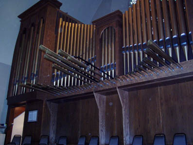
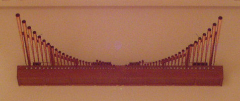

|
A Trompette stop which is mounted en chamade, which may or may not be externally visible. For more information, see Chamade.
See also State Trumpet and Fan Tuba.

The Horizontal Trumpet at St. Mary's Cathedral, Lansing, Michigan, USA.
Photo by Ed Stauff; click on it for a larger image.

The Trompette en Chamade at St. Luke's United Methodist Church, Indianapolis,
Indiana, USA. Photo by Ed Stauff; click on it for a larger image.
No examples are known of the names Trompette à Chamade or Fan Trumpet. Contributions welcome.
Dessus de trompette en chamade 8', Grand Orgue; Dessus de trompette en chamade 8', Jeux d'Echo (Rèsonance); St. Maximin-en-var, Provence, France; Isnard 1772. This is the earliest known use of the phrase en chamade.
Trompette en chamade 8', Solo Expressif; Albert Hall, Sheffield, England; Cavaillé-Coll 1873.
Trompette-en-chamade 8', Grand-Orgue; Saint-Sernin, Toulouse, France; Cavaillé-Coll 1889.
Trompette-en-chamade 8', Grand-Orgue; Saint-Ouen, Rouen, France; Cavaillé-Coll 1890.
Horizontal Trumpet 8', 4', Great; Central Lutheran Church, Winona, Minnesota, USA; Hendrickson 1994. These are the only known examples of this name.
Would you like to hear what a Trompette en Chamade sounds like?
For as little as $10 (US), you can sponsor a page in this Encyclopedia, and help purchase more sound samples!
Our next purchase will be samples for a 3-manual 53-rank E. M. Skinner organ that includes many stops for which we currently have no sound samples, including a Trompette en Chamade.
|
Original site compiled by Edward L. Stauff. For educational use only. TrompetteEnChamade.html - Last updated 19 October 2003. |
Home Full Index |
{kind=link}
{kind=link}